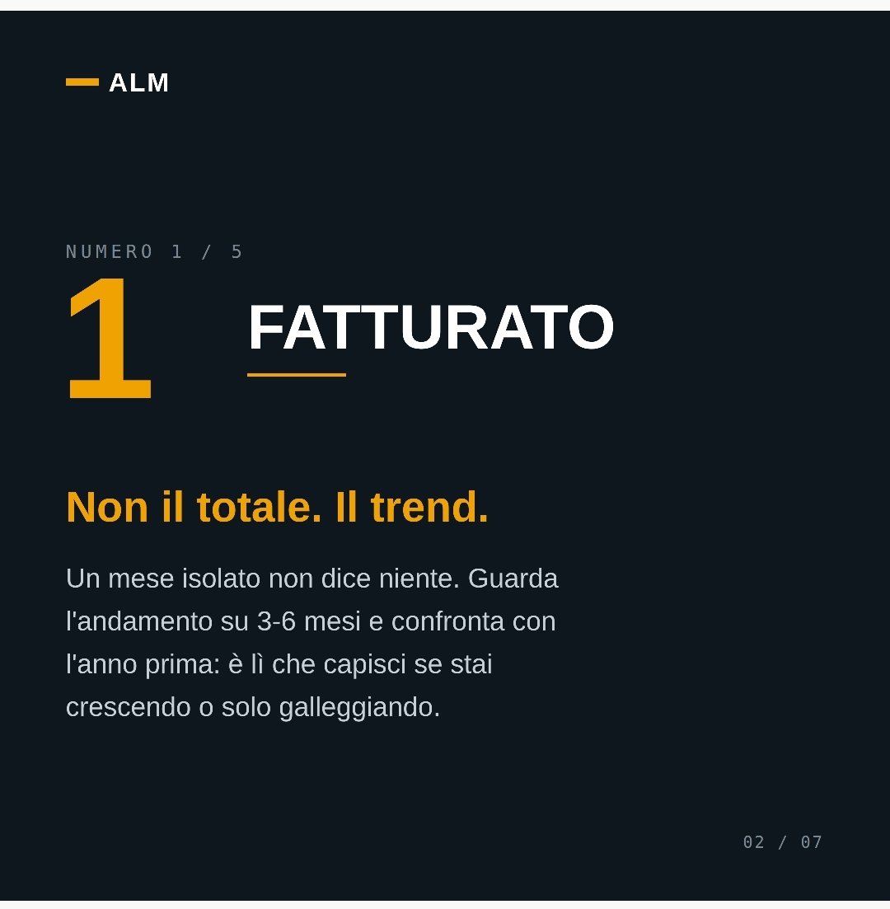
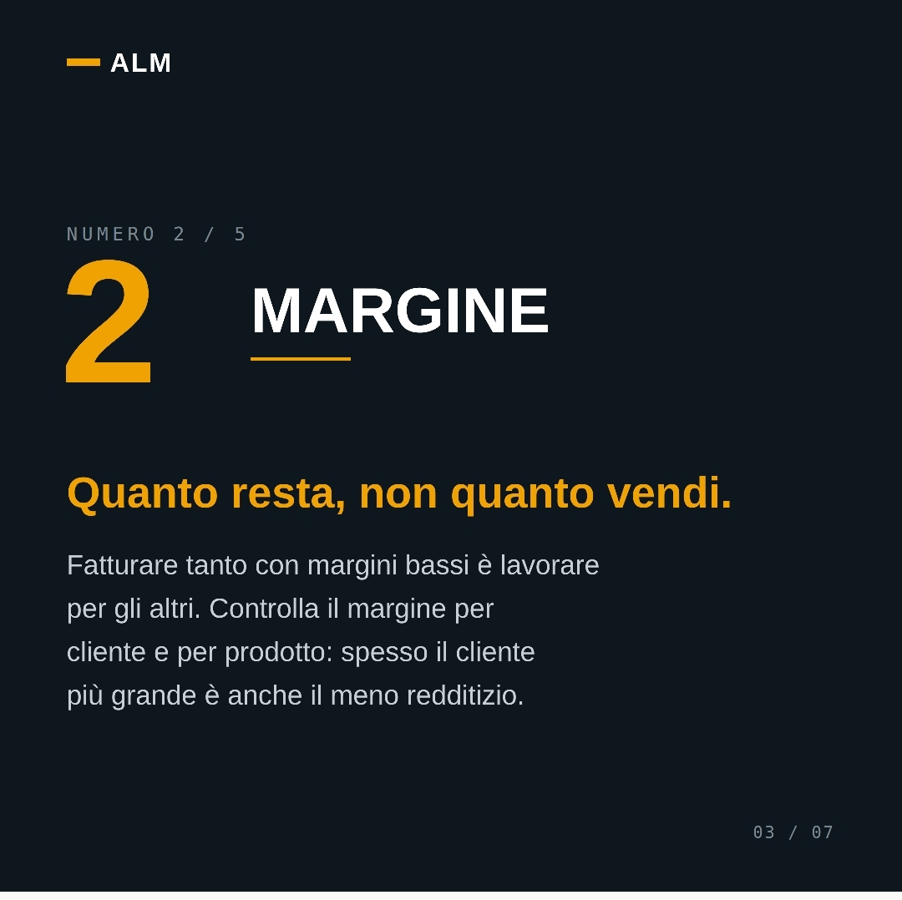
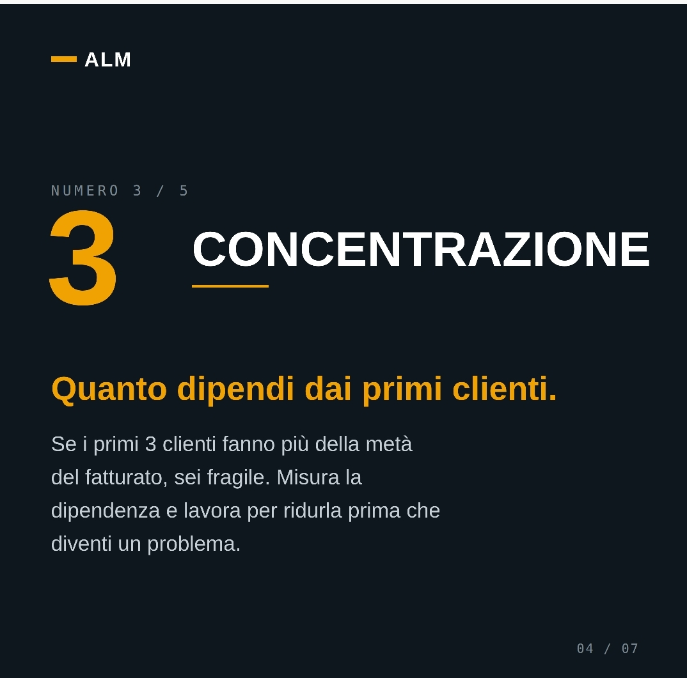
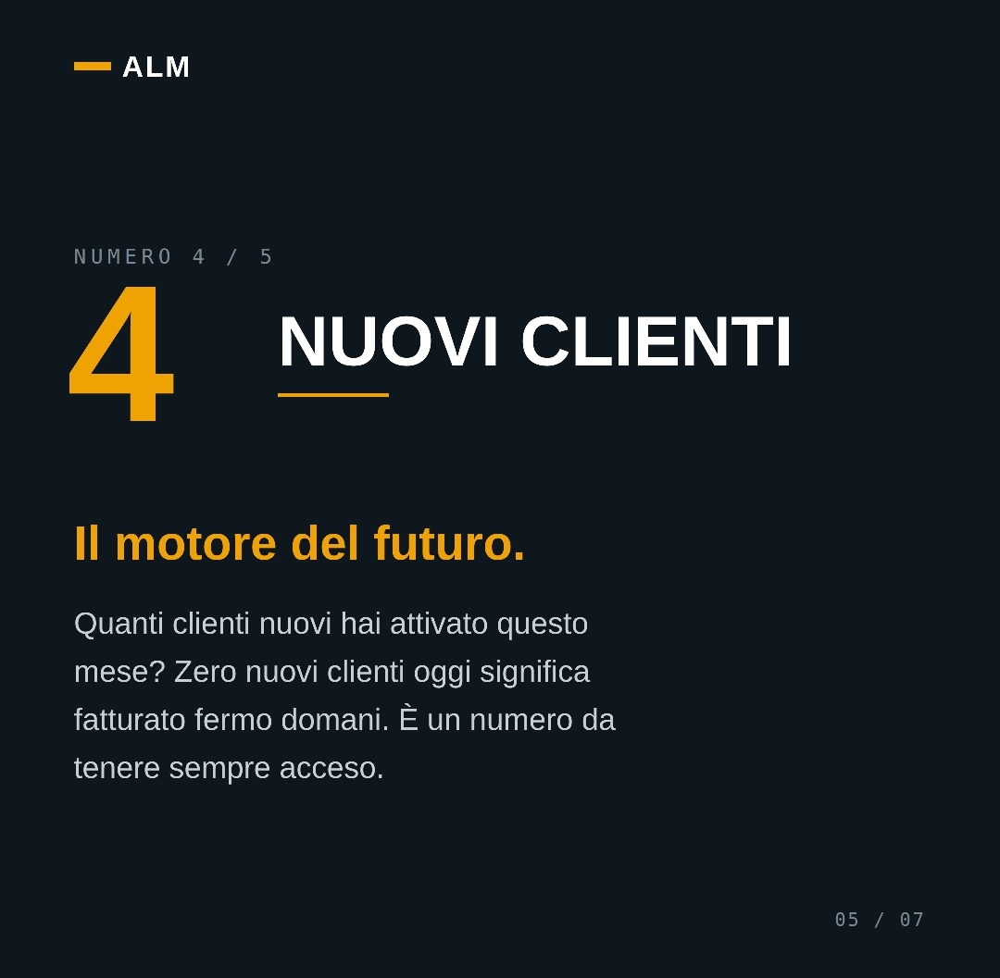
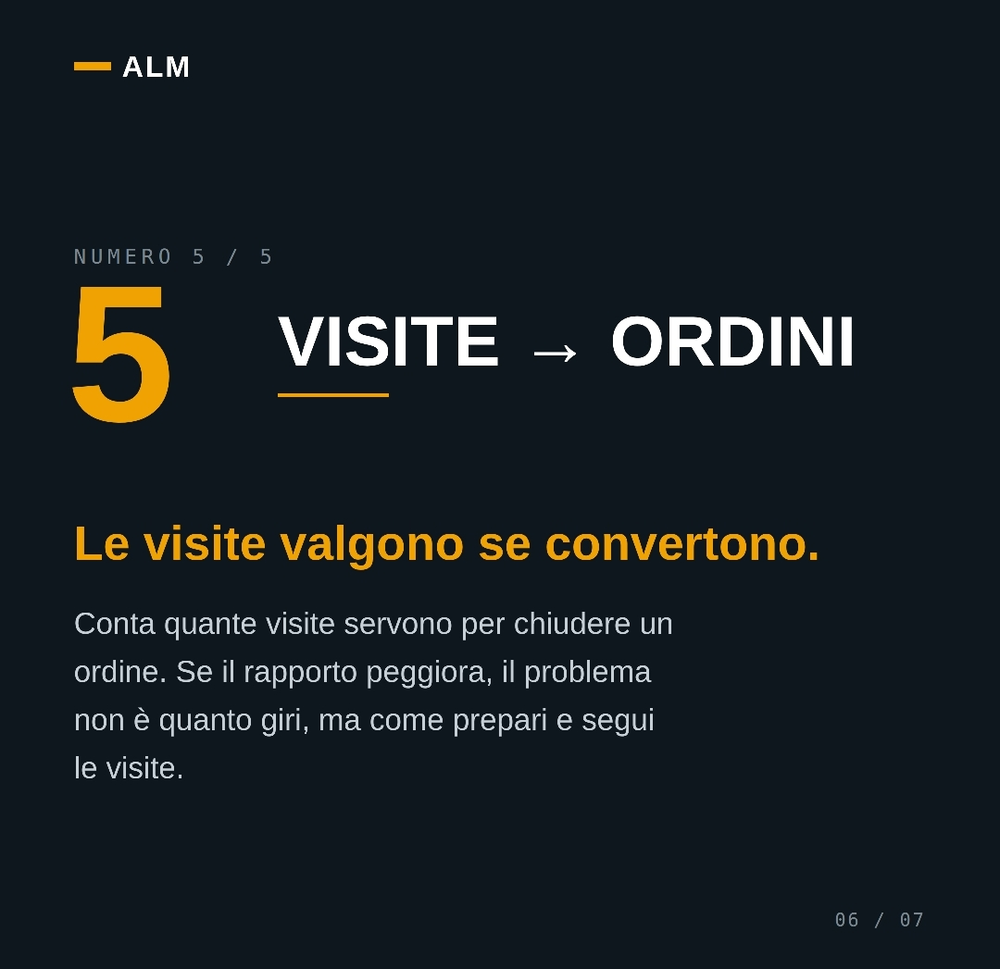
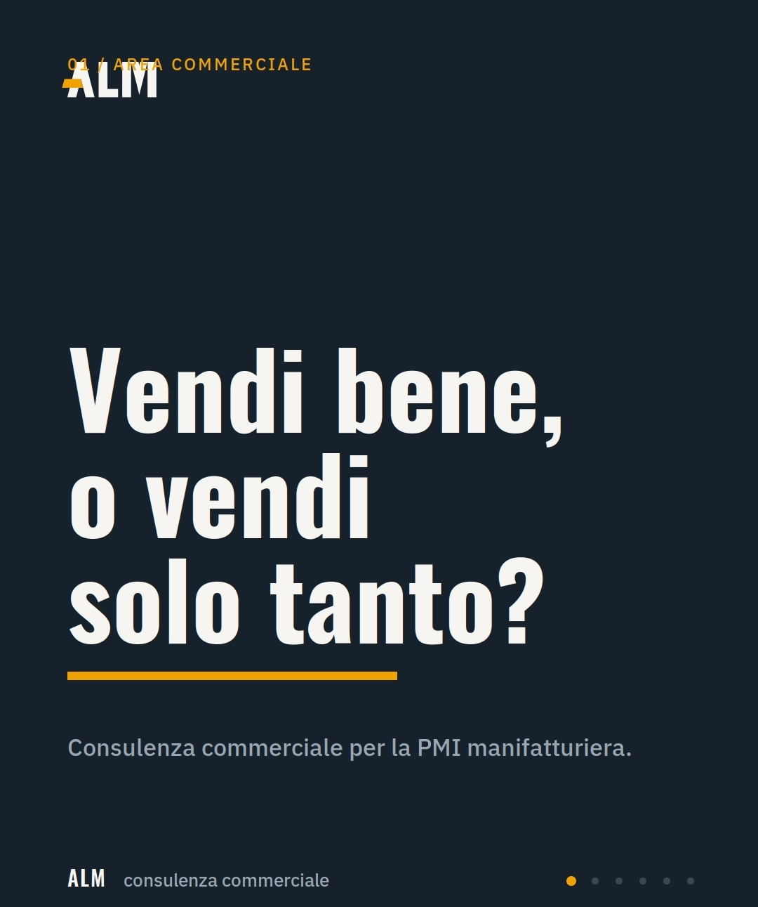
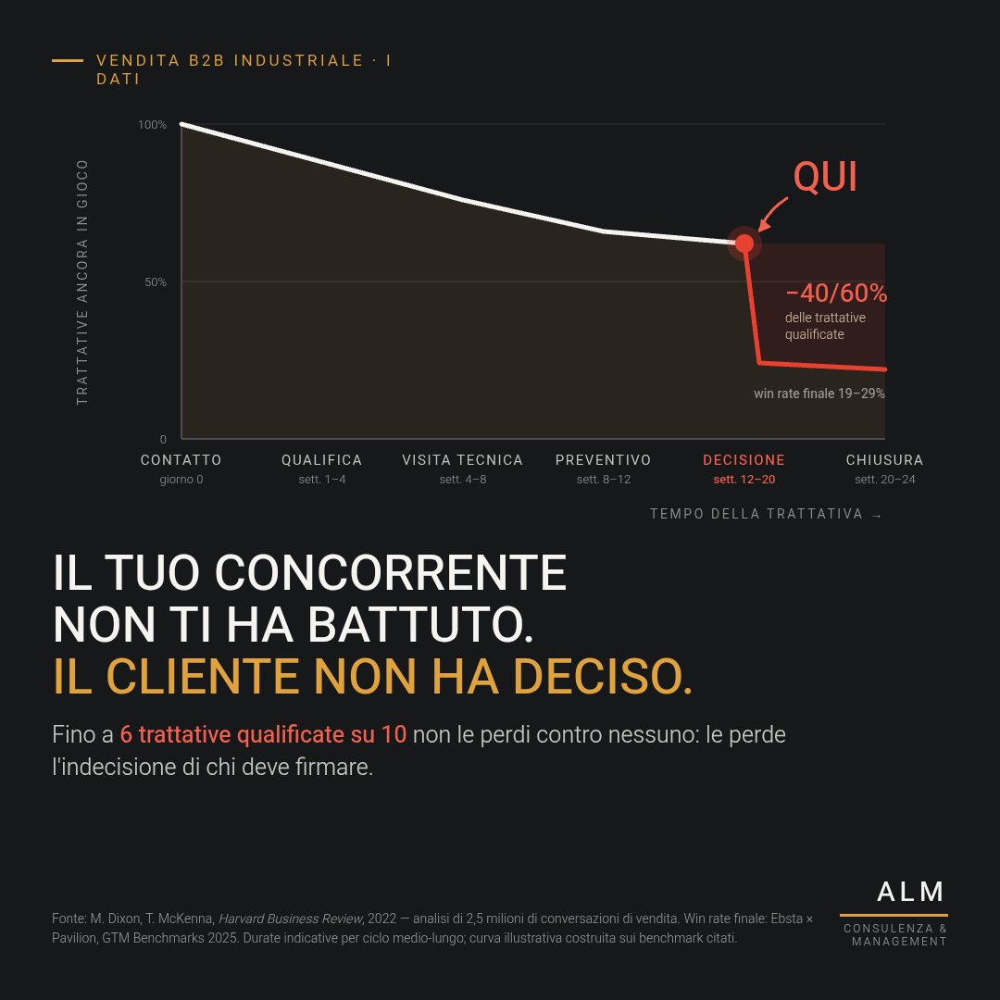
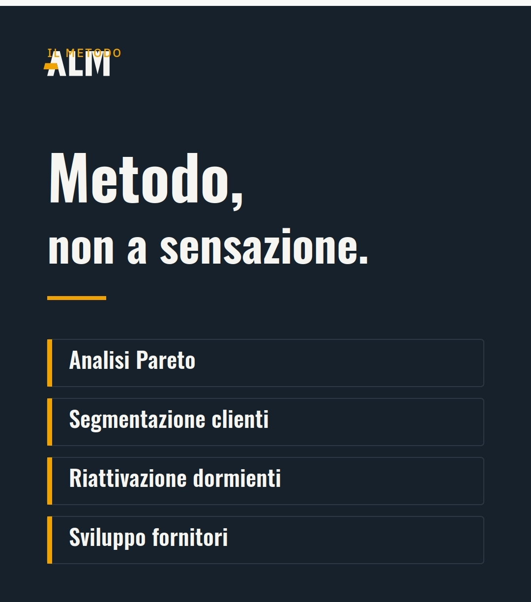
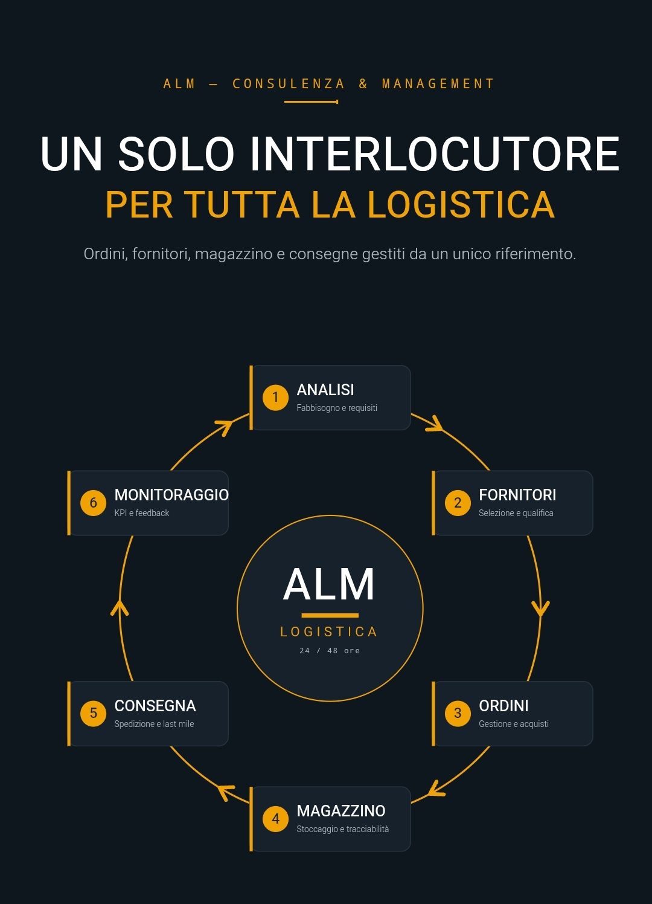

// Media
Metodo, numeri e logistica — a colpo d'occhio.
Materiali che uso per spiegare come lavoro: i numeri da controllare ogni mese, il problema reale dietro le trattative perse, e come gestisco la logistica per chi produce.
01
5 numeri da guardare ogni mese
Se non li misuri, stai vendendo a occhio. I cinque indicatori che controllo per primi quando analizzo una PMI manifatturiera.






02
Vendi bene, o vendi solo tanto?
Il tuo concorrente non ti ha battuto: il cliente non ha deciso. Fino a 6 trattative qualificate su 10 si perdono per indecisione, non per la concorrenza.



03
ALM Logistica
Un solo interlocutore per tutta la logistica: analisi, fornitori, ordini, magazzino, consegna e monitoraggio gestiti da un unico riferimento.
